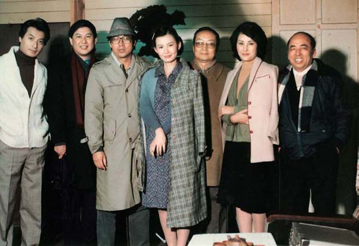

牡丹因缘
我与广西师范大学出版社
白先勇
我与广西师范大学出版社因《牡丹亭》而开始结缘。二〇〇四年由我领队制作的昆曲连台大戏三本青春版《牡丹亭》在台北首演一炮而红，我们在演出的同时由台湾远流出版社出版了《姹紫嫣红牡丹亭》，此书由我策划，收编了我们改编的二十七折青春版《牡丹亭》剧本，并有学者专家的阐释文章。书中汇辑多幅历来饰演《牡丹亭》名角影像，尤为珍贵。此书出版，在台湾反应甚佳，第一版一售而罄。同年青春版《牡丹亭》赴大陆巡演，到苏州、杭州、北京、上海等地。我们觉得《姹紫嫣红牡丹亭》应该出大陆版。远流找到合作对象：广西师范大学出版社。这也可以说是一种特殊机缘，天作之合。我原籍广西桂林，由自己家乡的出版社来出版第一本有关青春版《牡丹亭》的书，特别有意义。出版后，刚巧五月全国书市在桂林召开，这是出版界的一个盛会，广西师范大学出版社的负责人之一刘瑞琳女士邀请我到桂林，为《姹紫嫣红牡丹亭》开新书发布会，我当然高兴，因为又可以乘机返乡一趟。发布会的场面多少出我意料之外，一下子来了五六十家媒体，记者发问非常热烈，《姹紫嫣红牡丹亭》的知名度也就从此散开了。
我觉得这本书的出版有多重意义：首先这是大陆出版第一本有关青春版《牡丹亭》的书，对这出戏起了先头宣传部队的作用。这部书最大的特色是用繁体字直排，这样书本身便蕴涵着一种古籍雅意。而这部书的装帧又特别精美，设计大方，图片悦目，难怪二〇〇五年这部书夺得了南方报业集团举办的首届华语图书传媒大奖。这是一份十分难得的殊荣。早些年大陆有些出版社出版古籍采用繁体字直排，这些年比较少见，而广西师范大学出版社出版《姹紫嫣红牡丹亭》竟用了繁体直排，而又获得大奖，我认为有其深远的文化意义。我很佩服出版社领导人的眼光。
接着广西师范大学出版社出版我的一本选集《青春·念想》，我跟出版社以及出版社的同仁们关系就更加密切了。因为这些年昆剧青春版《牡丹亭》经常到北京演出，我亲自领军到北京就有五次，每次演出我们都需要各界的支援，广西师范大学出版社驻北京的同仁在这方面，上下一体，对我们可说是做到仁尽义至，从联络媒体宣传到人员协助，无一不全力以赴，当然，演出时，出版社的同仁们一直是我们最热烈的啦啦队。出版社同仁给予我如此坚定的精神支持与鼓励，我想他们一定也认同我们推广昆曲是在兴灭继绝抢救我们的文化瑰宝，他们努力出版，一样在从事文化大业。其实我们的追求殊途同归，所以能够彼此欣赏。二〇〇六年适逢广西师范大学出版社成立二十周年社庆，在桂林总部盛大举行。为了替出版社庆祝，我们特地把青春版《牡丹亭》送到桂林，在广西师范大学校园连演三天，那真是盛况空前，每晚演出场里挤得水泄不通。前一年我在广西师大演讲，曾经许愿，有机会我一定要把我制作的《牡丹亭》带到桂林，让广西师大的同学及乡亲们看到这出戏。第二年，我们真的做到了，而且还替出版社热闹了一番。我跟出版社结的可说是“牡丹缘”。
中国出版业竞争激烈，广西师范大学出版社能够脱颖而出，名列前茅，诚非易事。国外如美国的哈佛、哥伦比亚，英国的牛津、剑桥，这几家名校的出版社在英美以及全世界的学术文化界举足轻重，广西师范大学出版社的影响不仅普及全国并能跨越海外，像余英时、许倬云这些海外学术界大师们的作品也被网罗旗下。广西师大出版社能够建立如此优良声誉，绝非偶然，我还没看见他们出版过一本浅俗媚众的读物。家乡能产生如此高层次的文化亮点，我深引以为傲。当总编辑刘瑞琳来跟我商洽出版我的作品集，我欣然同意，并感到义不容辞。刘瑞琳女士刚刚被《中国新闻周刊》选为“十年影响力人物”。在此，我特别要向她致谢，同时也要感谢为这套书花费大量精力的执行编辑刘哲双及曹凌志。
二〇一〇年八月十二日
乌衣巷
刘禹锡
朱雀桥边野草花
乌衣巷口夕阳斜
旧时王谢堂前燕
飞入寻常百姓家
于台北办《现代文学》时留影。
一九六〇年创办《现代文学》时合影：第一排左起陈若曦、欧阳子、刘绍铭、白先勇、张先绪，第二排左起戴天、方蔚华、林耀福、李欧梵、叶维廉、王文兴、陈次云。
一九六二年《现代文学》同仁在碧潭野餐留影。
爱荷华大学留影。
六〇年代在柏克莱写作《游园惊梦》时留影。
在圣芭芭拉写作《台北人》时留影。

八〇年代《金大班的最后一夜》开拍，与导演白景瑞（右）等人合影。
八〇年代与《游园惊梦》女主角卢燕合影。
北京新闻发布会上与《金大班的最后一夜》女主角刘晓庆合影。
晚年留影。（柯锡杰摄影）